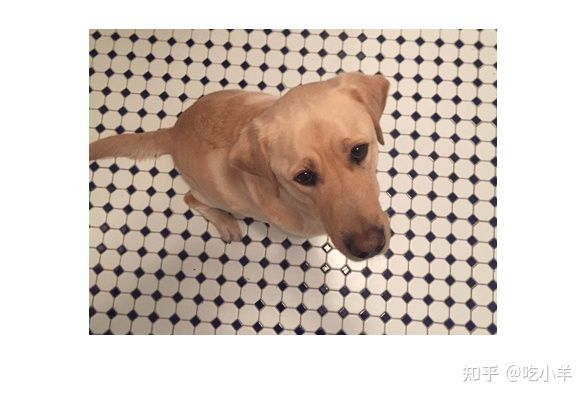
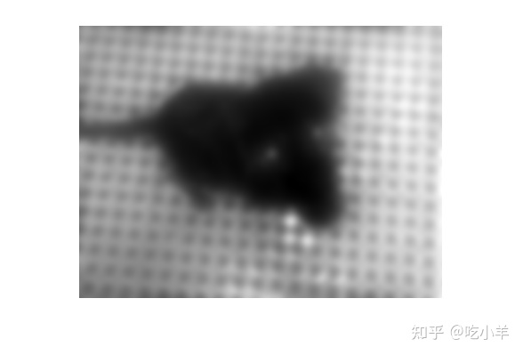
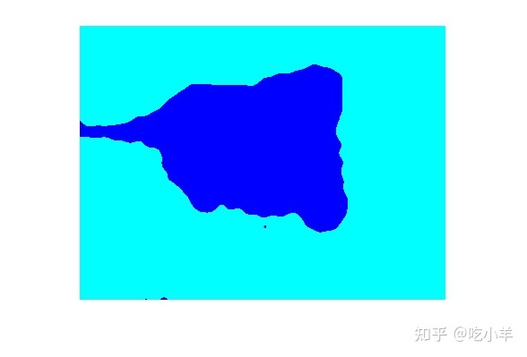
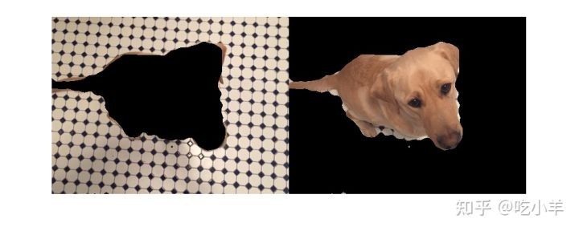

Home
本示例展示了如何根据纹理，使用纹理分割识别区域。目标是将狗与浴室地板分开。由于浴室地板的规则、周期性图案与狗皮毛的规则、平滑纹理之间的纹理差异，其差异在视觉上是很明显的。
从实验中可知，Gabor 滤波器是哺乳动物视觉系统中简单细胞的合理模型。正因为如此，Gabor 滤波器被认为是人类如何区分纹理的一个很好的模型，因此在设计识别纹理的算法时是一个有用的模型。此示例使用AK Jain 和 F. Farrokhnia（“Unsupervised Texture Segmentation Using Gabor Filters”，1991 ）描述的基本方法来执行纹理分割。
读取并显示输入图像
读取并显示输入图像。此示例缩小图像以使示例运行得更快。
A = imread('kobi.png');
A = imresize(A,0.25);
Agray = rgb2gray(A);
figure
imshow(A)

设计Gabor 滤波器阵列
设计一系列调谐到不同频率和方向的 Gabor 滤波器。这组频率和方向旨在定位输入图像中不同的、大致正交的频率和方向信息子集。以 30 度的步长对 [0,150] 度之间的方向进行采样。采样波长以 2 的幂递增，从 4/sqrt(2) 到输入图像的斜边长度。这些频率和方向的组合取自文献 [Jain,1991]的引言中。
imageSize = size(A); numRows = imageSize(1); numCols = imageSize(2); wavelengthMin = 4/sqrt(2); wavelengthMax = hypot(numRows,numCols); n = floor(log2(wavelengthMax/wavelengthMin)); wavelength = 2.^(0:(n-2)) * wavelengthMin; deltaTheta = 45; orientation = 0:deltaTheta:(180-deltaTheta); g = gabor(wavelength,orientation);
从源图像中提取 Gabor 幅度特征。使用 Gabor 滤波器时，通常要使用每个滤波器的幅度响应。Gabor 幅度响应有时也称为“Gabor 能量”。输入的每个 MxN Gabor 幅度输出图像gabormag(:,:,ind)是相应 Gabor 滤波器g(ind)的输出。
gabormag = imgaborfilt(Agray,g);
将 Gabor 幅度图像后处理，成为 Gabor 特征
要将 Gabor 幅度响应用作分类特征，需要进行一些后处理。这种后处理包括高斯平滑、向特征集添加额外的空间信息、将我们的特征集重塑为pca和kmeans函数预期的形式，并将特征信息归一化为共同的方差和均值。
每个 Gabor 幅度图像都包含一些局部变化，即使在具有恒定纹理的分割良好的区域内也是如此。这些局部变化会破坏分割。我们可以使用简单的高斯低通滤波，平滑 Gabor 幅度信息来补偿这些变化。我们选择一个与提取每个特征的 Gabor 过滤器匹配的 sigma。我们引入了一个平滑项 K，它控制对 Gabor 幅度响应应用的平滑程度。
for i = 1:length(g)
sigma = 0.5*g(i).Wavelength;
K = 3;
gabormag(:,:,i) = imgaussfilt(gabormag(:,:,i),K*sigma);
end
在为分类构建 Gabor 特征集时，在 X 和 Y 中添加空间位置信息的地图很有用。此附加信息允许分类器更喜欢空间上靠近的分组。
X = 1:numCols; Y = 1:numRows; [X,Y] = meshgrid(X,Y); featureSet = cat(3,gabormag,X); featureSet = cat(3,featureSet,Y);
将数据重新整形为函数kmeans的预期矩阵X。图像网格中的每个像素都是一个单独的数据点，变量featureSet中的每个平面都是一个单独的特征。在这个例子中，Gabor 滤波器组中的每个滤波器都有一个单独的特征，加上在上一步中添加的空间信息中的两个附加特征。输入图像中的每个像素总共有 24 个 Gabor 特征和 2 个空间特征。
numPoints = numRows*numCols; X = reshape(featureSet,numRows*numCols,[]);
将特征归一化为零均值、单位方差。
X = bsxfun(@minus, X, mean(X)); X = bsxfun(@rdivide,X,std(X));
可视化特征集。为了了解 Gabor 幅度特征的样子，可以使用主成分分析将输入图像中每个像素的 26-D 表示转换为每个像素的 1-D 强度值。
coeff = pca(X); feature2DImage = reshape(X*coeff(:,1),numRows,numCols); figure imshow(feature2DImage,[])

在这个可视化中很明显，Gabor 特征信息中有足够的差异，来获得该图像的良好分割。由于狗和地板之间的纹理差异，狗与地板相比非常暗。
使用 kmeans 对 Gabor 纹理特征进行分类
在搜索最小化目标函数的均值时，重复 kmeans 聚类五次以避免局部最小值。在这个例子中假设的唯一先验信息是被分割的图像中存在多少不同的纹理区域。在这种情况下有两个不同的区域。示例的这一部分需要 Statistics and Machine Learning Toolbox™。
L = kmeans(X,2,'Replicates',5);
使用label2rgb.做可视化观察。
L = reshape(L,[numRows numCols]); figure imshow(label2rgb(L))

使用imshowpair可视化分割的图像。检查由与标签矩阵 L 关联的蒙版 BW 产生的前景和背景图像。
Aseg1 = zeros(size(A),'like',A); Aseg2 = zeros(size(A),'like',A); BW = L == 2; BW = repmat(BW,[1 1 3]); Aseg1(BW) = A(BW); Aseg2(~BW) = A(~BW); figure imshowpair(Aseg1,Aseg2,'montage');

======================================================================
我的测试结果及程序
下面是我测试的代码：

注：本文根据MATLAB官网内容修改而成。